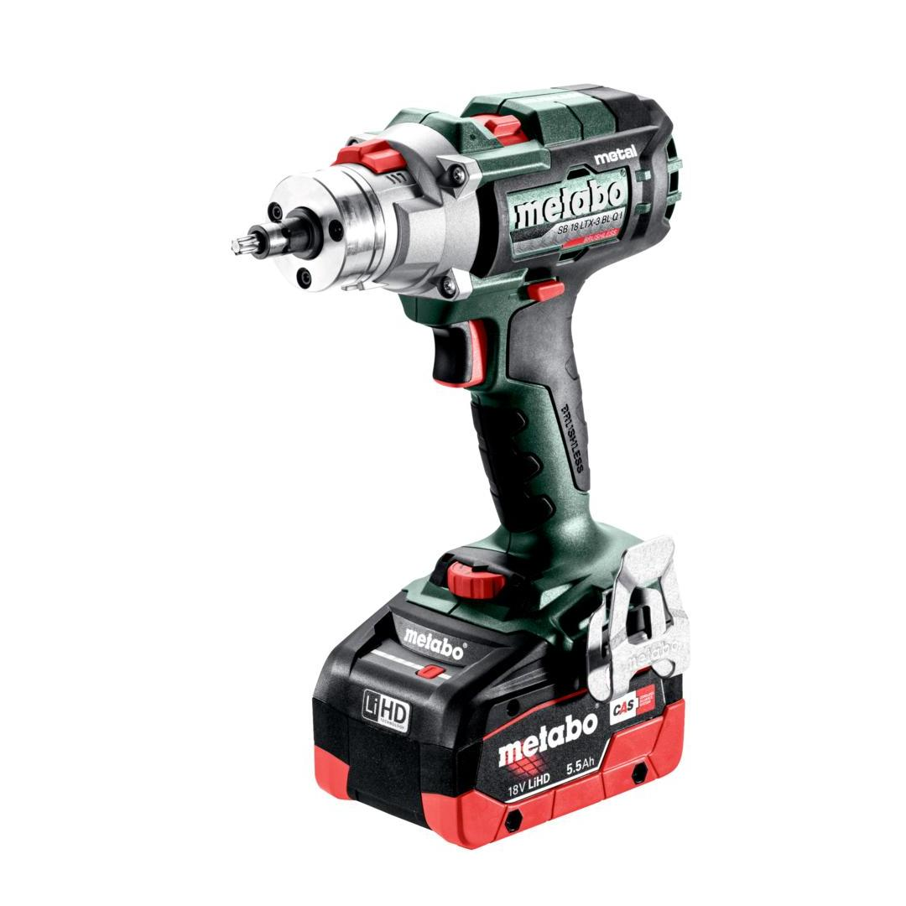
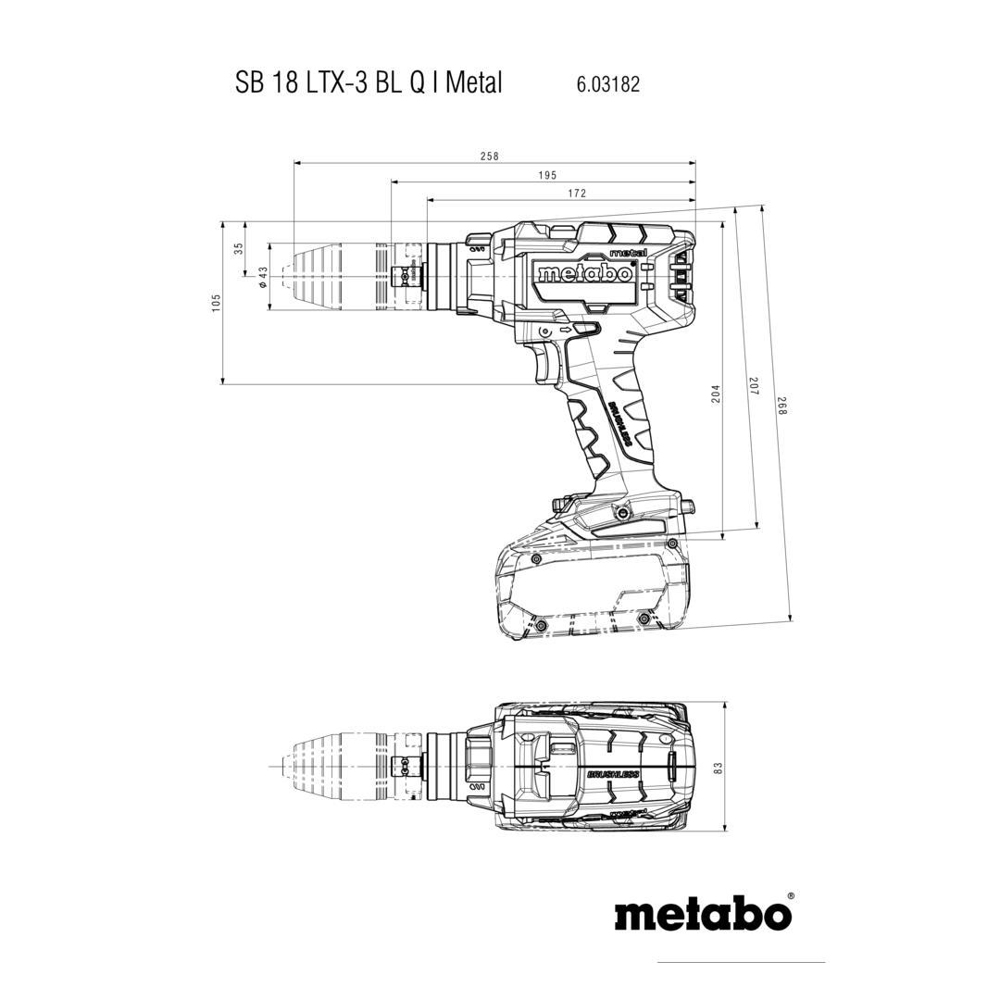
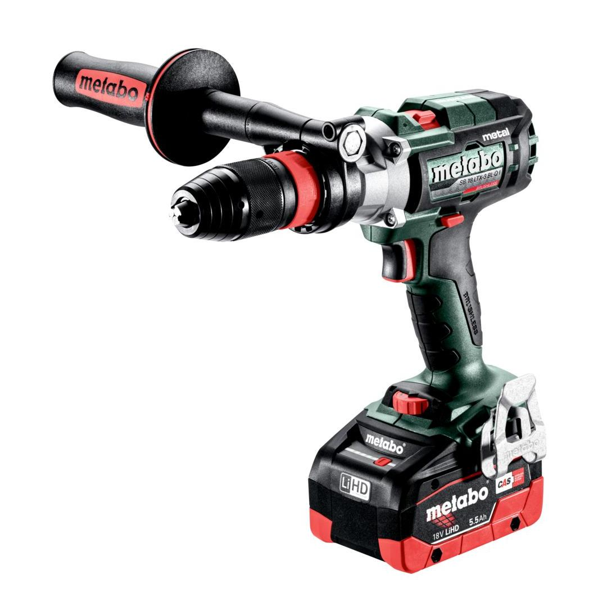
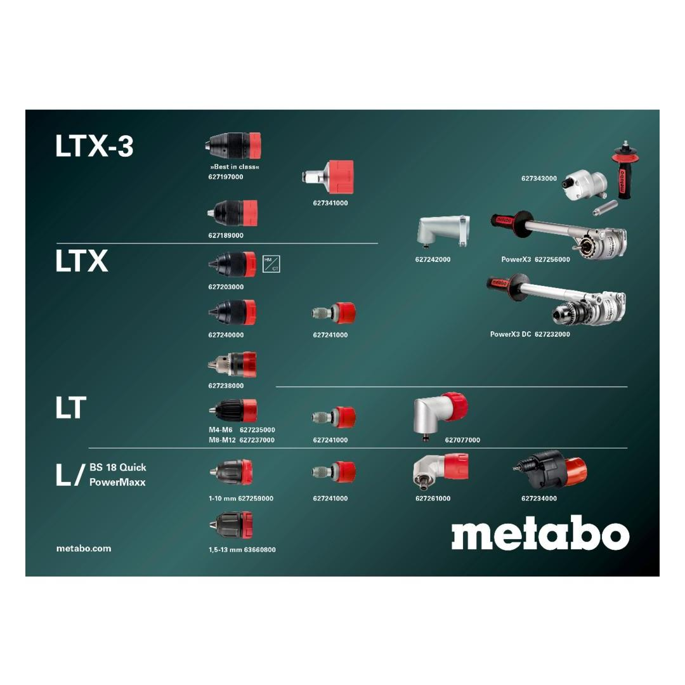

Metabo | 2 x 5.5Ah Batteries / ASC 55 Charger
603182660






| Battery voltage | 18 V |
| Maximum torque, soft | 65 Nm / 575.3 in-lbs |
| Maximum torque, hard | 130 Nm / 1150.6 in-lbs |
| Drill-Ø masonry | 16 mm / 5/8 " |
| Drill Ø steel | 16 mm / 5/8 " |
| Drill-Ø soft wood | 68 mm / 2.68 " |
| No-load speed | 0 - 450 / 0 - 2000 / 0 - 4000 rpm |
Product Description
- The metal expert: brushless 3-speed cordless combi drill with maximum power and automatically re-tightening chuck
- Extremely powerful chuck with re-tensioning function against slipping of the bit and high degree of concentricity
- Third speed setting with high torque (max. 4,000/min) for extended range of application and even faster drilling progress, especially in metal
- Hammer drill function for drilling in masonry
- Metabo QuickPlus System for heavy-duty use: Quick-change of chuck, bit holder, angle adapter, and more for flexible working
- Selectable "impuls" mode for removal of stubborn screws and for spot-drilling on smooth surfaces
- Robust, durable gear housing made from aluminium die-cast
- Spindle with magnetic hexagon recess for screwdriver bits for working without chuck
- Powerful Brushless motor for greatest efficiency and long battery pack runtime
- Precision Stop: electronic torque control with increased precision for precise, delicate working
- Overload protection: protects the motor from overheating
- Euro collar (Ø 43 mm) for versatile use
- Electronic safety shutdown: no kickback if the drill bit stops unexpectedly - for high user safety
- Integrated LED work light with afterglow function for optimal brightness in the work area
- With handy belt hook and bit case which can be fixed either on the right or left side
- With metaBOX, the intelligent solution for transport and storage
- Many brands, one battery pack system: This product can be combined with all 18V battery packs and chargers of the CAS brands: www.cordless-alliance-systems.com
Product Highlights
Metabo QuickPlus System for heavy-duty use
Quick-change of chuck, bit holder, angle adapter, and more for flexible working
Precision Stop
Electronic torque control with increased precision for precise, delicate working
Brushless Motor
Unique Metabo brushless motor for quick work progress and highest efficiency for any application
Overload protection
protects the motor from overheating
Electronic safety shutdown
no kickback if the drill bit stops unexpectedly - for high user safety
Selectable "impuls" mode
for removal of damaged screws and for spot-drilling on smooth surfaces
Technical Details
KEY FIGURES| Type of battery pack | LiHD |
| Battery voltage | 18 V |
| Battery pack capacity | 2 x 5.5 Ah |
| Maximum torque, soft | 65 Nm / 575.3 in-lbs |
| Maximum torque, hard | 130 Nm / 1150.6 in-lbs |
| Adjustable torque | 1 - 18 Nm // 8.9 - 159.3 in-lbs |
| Drill-Ø masonry | 16 mm / 5/8 " |
| Drill Ø steel | 16 mm / 5/8 " |
| Drill-Ø soft wood | 68 mm / 2.68 " |
| No-load speed | 0 - 450 / 0 - 2000 / 0 - 4000 rpm |
| Maximum impact rate | 38000 bpm |
| Chuck capacity | 1.5 - 13 mm // 1/16 - 1/2 " |
| Collar diameter | 43 mm / 1.69 " |
| Weight without battery pack | 2.1 kg / 4.6 lbs |
| Weight with battery pack | 3.1 kg / 6.8 lbs |
VIBRATION| Drilling in metal | 3 m/s² |
| Uncertainty of measurement K | 1.5 m/s² |
| Impact drilling concrete | 25 m/s² |
| Uncertainty of measurement K | 1.5 m/s² |
NOISE EMISSION| Sound pressure level | 101 dB(A) |
| Sound power level (LwA) | 109 dB(A) |
| Uncertainty of measurement K | 3 dB(A) |
Scope of delivery
| Futuro Top quick-change chuck "QuickPlus" |
| Side handle |
| C-wrench |
| 2 LiHD battery packs (18 V/5.5 Ah) |
| Quick charger ASC 145 "AIR COOLED" |
| metaBOX 145 L |